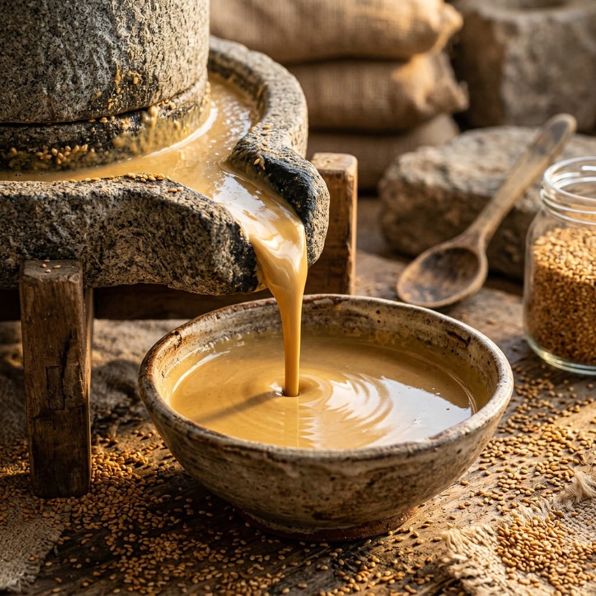

Traditionelles Tahin: Die Kunst der Steinmühle

Sesammus, weltweit besser bekannt unter dem Namen Tahin (oder Tahini), ist ein elementarer Bestandteil der mediterranen, nahöstlichen und anatolischen Küche. Während es im Westen oft nur als Zutat für Hummus bekannt ist, stellt Tahin in seinen Ursprungsländern ein hochgeschätztes, vielseitiges Grundnahrungsmittel dar. In diesem tiefgehenden Artikel beleuchten wir den komplexen, handwerklichen Herstellungsprozess, die gesundheitlichen Aspekte und die kulinarische Bedeutung von traditionellem Tahin.
Der Sesam (Sesamum indicum): Eine uralte Kulturpflanze
Sesam ist eine der ältesten bekannten Ölpflanzen der Welt, mit einer Anbaugeschichte, die bis ins vierte Jahrtausend vor Christus nach Mesopotamien und auf den indischen Subkontinent zurückreicht. Die Pflanze gedeiht besonders gut in heißen, trockenen Klimazonen. Aus den trompetenförmigen Blüten entwickeln sich Kapseln, die aufplatzen, sobald die Samen reif sind - ein Prozess, der dem berühmten Spruch "Sesam, öffne dich" aus Tausendundeiner Nacht seinen Ursprung gab. Für hochwertiges Tahin wird oft spezieller weißer oder leicht goldener Sesam verwendet, der ein besonders feines, nussiges Aroma und einen hohen Ölgehalt aufweist.
Der Herstellungsprozess: Ein Meisterwerk der Geduld
Die Herstellung von industriellem Tahin und traditionellem, handwerklichem Tahin unterscheidet sich grundlegend. Der traditionelle Weg, den wir bei Anadoa schätzen, ist arbeits- und zeitintensiv, garantiert aber ein unvergleichliches Endprodukt.
1. Das Einweichen und Schälen: Die Sesamsamen werden zunächst in großen Becken mit Salzwasser eingeweicht. Durch das Salz trennen sich die äußeren Schalen von den Kernen - die Schalen sinken zu Boden, während die reinen Kerne an der Oberfläche schwimmen. Dieser Schritt ist essenziell, da die Schalen Bitterstoffe enthalten, die den Geschmack des fertigen Tahins trüben würden.
2. Die Röstung: Nach dem Waschen und Trocknen folgt das Herzstück der Aromaentwicklung: Die Röstung. In speziellen Öfen werden die Samen bei schonenden Temperaturen und unter ständiger Bewegung sanft geröstet. Hier ist das Fingerspitzengefühl des Röstmeisters gefragt. Ein zu kurzes Rösten führt zu einem flachen Geschmack, ein zu langes Rösten zu einem verbrannten, bitteren Aroma. Die perfekte Röstung verleiht dem Sesam seine warme, nussige Tiefe und bereitet die Öle auf die Vermahlung vor.
Das Geheimnis der Steinmühle
Der entscheidende Unterschied liegt jedoch im letzten Schritt: der Vermahlung. Industrielle Stahlmühlen mahlen den Sesam mit hoher Geschwindigkeit. Dabei entsteht starke Reibungshitze, die die feinen Öle im Sesam oxidieren lässt, wichtige Nährstoffe zerstört und den Geschmack abstumpft.
Die traditionelle Steinmühle arbeitet völlig anders. Zwei massive, schwere Mahlsteine - oft aus speziellem Granit oder Basalt - drehen sich mit sehr langsamer Geschwindigkeit übereinander. Die Sesamsamen rieseln durch das Auge des oberen Steins und werden zwischen den Steinen buchstäblich zerrieben. Dieser langsame Prozess erzeugt kaum Hitze. Die ätherischen Öle bleiben intakt, die Proteinstrukturen unversehrt. Das Ergebnis ist ein Tahin von seidig-flüssiger Konsistenz, das förmlich aus der Mühle fließt - ein flüssiges Gold mit einem intensiven, runden und tief nussigen Aroma, das kein industrielles Produkt jemals erreichen kann.
Nährstoffprofil: Ein pflanzliches Kraftpaket
Tahin ist ernährungsphysiologisch ein echtes Schwergewicht. Es ist eine der besten pflanzlichen Quellen für Calcium, was es besonders für Veganer und Menschen mit Laktoseintoleranz unverzichtbar macht. Zwei Esslöffel Tahin enthalten oft mehr Calcium als ein halbes Glas Milch. Calcium ist essenziell für starke Knochen, Zähne und die Muskelfunktion.
Darüber hinaus ist Sesammus extrem reich an pflanzlichen Proteinen (ca. 20-25%) und enthält eine Fülle an B-Vitaminen (insbesondere B1 und B6), die das Nervensystem unterstützen. Die im Tahin enthaltenen Fette sind zu über 80% ungesättigte Fettsäuren, die für die Herzgesundheit und die Senkung des Cholesterinspiegels von großer Bedeutung sind. Spezielle Lignane (Sesamin und Sesamolin) in den Samen weisen zudem starke antioxidative Eigenschaften auf und schützen die Leber vor oxidativem Stress.
Die kulinarische Vielseitigkeit
In der anatolischen Kultur ist das Frühstück ohne "Tahin-Pekmez" kaum vorstellbar. Durch das Mischen des leicht herben, cremigen Tahins mit der intensiven, fruchtigen Süße von Traubenmelasse (Pekmez) entsteht ein Aufstrich, der geschmacklich an flüssiges Halva erinnert, jedoch vollkommen natürlich und ohne industriellen Zucker auskommt. Diese Kombination liefert langanhaltende Energie und wärmt den Körper an kalten Wintertagen.
Aber Tahin kann weit mehr. Es ist die Basis für herzhafte Dips wie Baba Ghanoush und Mutabbal. Gemischt mit Zitronensaft, etwas Knoblauch, Wasser und Salz entsteht das klassische Tahin-Dressing, das jeden Salat, gebackenes Gemüse oder Falafel auf ein neues Level hebt. Auch in der modernen pflanzlichen Bäckerei wird Tahin zunehmend als gesunder Ersatz für Butter eingesetzt, um Cookies und Kuchen eine wunderbar saftige Textur und ein umami-artiges Aroma zu verleihen.
Fazit: Qualität, die man schmeckt
Wenn Sie ein Glas traditionelles, steinvermahlenes Tahin öffnen, sehen Sie oft eine Ölschicht an der Oberfläche. Dies ist kein Fehler, sondern ein Qualitätsmerkmal. Es beweist, dass das Produkt zu 100% aus reinem Sesam besteht und auf künstliche Emulgatoren oder Stabilisatoren verzichtet wurde. Ein einfaches Umrühren mit dem Löffel reicht aus, um das Öl wieder unter die Paste zu mischen. Wer die Kunst der Steinmühle einmal geschmeckt hat, versteht, warum wir bei Anadoa Naturhaus diesen alten, traditionellen Weg als den einzig wahren für unser Tahin erachten.